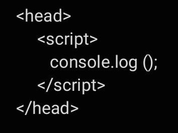
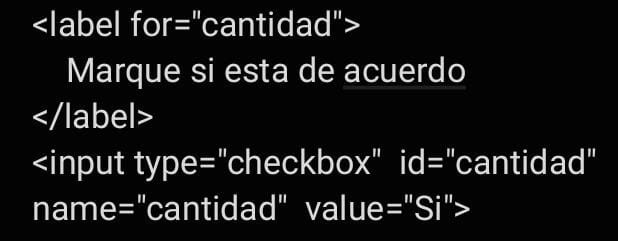

Versiones de JS en el mercado
En el año 1995, dentro de Netscape gracias a Brendan Eich nació el lenguaje Javascript. En su inicio fue llamado Mocha, para después cambiar su nombre por LiveScript y finalmente termino siendo JavaScript por la popularidad del lenguaje Java.
Debito a esto, Microsoft lazó su propio lenguaje para su navegador, JScript. Así es como nacé, ECMAScript (1997). ECMAScript es un consorcio Europeo que permitió generar un estándar para que los navegadores lo siguieran.
JavaScript 1.0: Navegador 2.0
JavaScript 1.1: Navegador 3.0
JavaScript 1.2: Navegador 4.0-4.05
JavaScript 1.3: Navegador 4.06-4.7x
JavaScript 1.4: n/a
JavaScript 1.5: Navegador 6.0, Mozilla 0.6x-0.9x (navegador de código abierto)
JavaScript 1.6: Mozilla Firefox 1.5
JavaScript 1.7: Mozilla Firefox 2
Cómo integrar JavaScript a HTML

Manejo de variables, tipos de datos y expresiones regulares en JS
Expresiones regulares:
Las expresiones regulares son patrones que se utilizan para hacer coincidir combinaciones de caracteres en cadenas.
En JavaScript, las expresiones regulares también son objetos. Estos patrones se utilizan con los métodos exec() y test() de RegExp, y con match(), matchAll(), replace(), replaceAll() (en-US), search() y split() métodos de String. Este capítulo describe las expresiones regulares de JavaScript.
Variables:
Utiliza variables como nombres simbólicos para valores. Los nombres de las variables, llamados identificadores, se ajustan a ciertas reglas. Un identificador de JavaScript debe comenzar con una letra, un guión bajo ( _ ) o un signo de dólar ( $ ).
Tipos de datos:
En JS, un valor primitivo son datos que no son un objeto y no tienen metodos, los cuales son:
- Strings: Cadena de texto.
- Number: Valores numericos.
- Boolean: Verdadero o falso.
- Undefined: Existe, cuando no se le asigna un valor a una variable.
- Symbol: Un symbol es un valor primitivo unico e inmutable y puede ser usado como la clave de una propiedad de un Object.
- Null: Es cuando un dato no existe.
Formas de declaración de funciones en JS
Por definición una función es un procedimiento, un conjunto de sentencias que realizan una tarea o calculan un valor. En Javascript este es uno de los conceptos más importantes y versátiles de este lenguaje de programación.
En Javascript las funciones son un objeto. Por ello se les puede asignar variables, arrays u otros objetos. La forma en la cual hallamos definido nuestra función, definirá el comportamiento de la misma. Siendo los tipos de función que podemos crear en Javascript los siguientes:
-Function declaration
-Function expression
-IIFE (Immediately Invoked Function Expression)
-Shorthand method definition
-Arrow function
-Generator function
-Function constructor
Operadores y conversión entre tipos
Operadores:
JavaScript tiene los siguientes tipos de operadores:
Nombres:
-Asignació: operador abreviado: x = y, significado: x = y
-Asignación de adición: operador abreviado: x += y, significado:x = x + y
-Asignación de resta: operador abreviado:x -= y, significado: x = x - y
-Asignación de multiplicación: operador abreviado:x *= y, significado: x = x * y
-Asignación de división: operador abreviado: x /= y, significado: x = x / y
-Asignación de residuo: operador abreviado: x %= y, significado: x = x % y
-Asignación de exponenciación: operador abreviado: x **= y, significado: x = x ** y
-Asignación de desplazamiento a la izquierda: operador abreviado: x <<= y, significado: x = x << y
-Asignación de desplazamiento a la derecha: operador abreviado: x >>= y, significado: x = x >> y
-Asignación de anulación lógica: operador abreviado: x ??= y, significado: x ?? (x = y)
Conversion entre tipos:
JavaScript es un lenguaje de tipo flexible y la mayoría de las veces los operadores convierten automáticamente un valor al tipo correcto, pero también hay casos en los que necesitamos hacer conversiones de tipos explícitamente.
Si bien JavaScript proporciona numerosas formas de convertir datos de un tipo a otro, hay dos conversiones de datos más comunes:
-Conversión de valores en strings: El método toString() en Javascript se usa con un número y convierte el número en una string. Se utiliza para devolver una string que representa el objeto número especificado.
Sintaxis:
num.toString(base)
El método toString() se usa con un número num como se muestra en la sintaxis anterior usando el '.' operador. Este método convertirá num en una string.
-Conversión de valores a números: Podemos usar la función Número() en JavaScript para convertir un valor en un número. Puede convertir cualquier texto numérico y valor booleano en un número. En el caso de strings de no números, lo convertirá en un NaN (No es un número).
Sintaxis:
Number(valueToConvert)
Estructuras de control de JS
Una estructura de control es una herramienta que tienen los lenguajes de programación y que se utiliza para controlar el flujo de las operaciones durante el programa.
Existen varias estructuras de control distintas y cada una se utilizará en el momento oportuno.
-IF/ELSE
-SWITCH
-BUCLE FOR
-BUCLE WHILE
-DO/WHILE
Objeto dom en JS
Cuando hablamos del objeto DOM nos referimos a una estructura en la que podemos modificar de forma dinámica desde Javascript, añadiendo nuevas etiquetas, modificando o eliminando otras, cambiando sus atributos HTML, añadiendo clases, cambiando el contenido de texto, etc...
En Javascript, la forma de acceder al DOM es a través de un objeto llamado document, que representa el árbol DOM de la página o pestaña del navegador donde nos encontramos. En su interior pueden existir varios tipos de elementos, pero principalmente serán ELEMENT o NODE
Para crear el DOM, el navegador web que lee el archivo HTML toma todas sus partes, desde el elemento HTML raíz hasta las etiquetas SPAN más pequeñas, y las devuelve como un objeto que el JavaScript comprende.
Funcion de Object Map
A veces es necesario tomar un arreglo y aplicar algún procedimiento a sus elementos para obtener un nuevo arreglo con elementos modificados.
En lugar de iterar manualmente sobre el arreglo usando un bucle, puedes simplemente usar el método incorporado Array.map().
El método Array.map() te permite iterar sobre un arreglo y modificar sus elementos utilizando una función callback. La función callback se ejecutará entonces en cada uno de los elementos del arreglo.
Si tenemos un simple arreglo y tenemos que multiplicar cada uno de los elementos por 3, generalmente utilizamos un bucle for, pero para conseguir el mismo resultado podemos utilizar array.map()
Eventos que trabaja JS
-abort (onabort):
Este evento se produce cuando un usuario detiene la carga de una imagen, ya sea porque detiene la carga de la página o porque realiza una acción que la detiene, como por ejemplo irse de la página.
-blur (onblur):
Se desata un evento onblur cuando un elemento pierde el foco de la aplicación. El foco de la aplicación es el lugar donde está situado el cursor, por ejemplo puede estar situado sobre un campo de texto, una página, un botón o cualquier otro elemento.
-change (onchange):
Se desata este evento cuando cambia el estado de un elemento de formulario, en ocasiones no se produce hasta que el usuario retira el foco de la aplicación del elemento.
-click (onclick):
Se produce cuando se da una pulsación o clic al botón del ratón sobre un elemento de la página, generalmente un botón o un enlace.
-dragdrop (ondragdrop):
Se produce cuando un usuario suelta algo que había arrastrado sobre la página web.
-error (onerror):
Se produce cuando no se puede cargar un documento o una imagen y esta queda rota.
-focus (onfocus):
El evento onfocus es lo contrario de onblur. Se produce cuando un elemento de la página o la ventana ganan el foco de la aplicación.
-keydown (onkeydown):
Este evento se produce en el instante que un usuario presiona una tecla, independientemente que la suelte o no. Se produce en el momento de la pulsación.
-keypress (onkeypress):
Ocurre un evento onkeypress cuando el usuario deja pulsada una tecla un tiempo determinado. Antes de este evento se produce un onkeydown en el momento que se pulsa la tecla.
-keyup (onkeyup):
Se produce cuando el usuario deja de apretar una tecla. Se produce en el momento que se libera la tecla.
-load (onload):
Este evento se desata cuando la página, o en Javascript 1.1 las imágenes, ha terminado de cargarse.
-mousedown (onmousedown):
Se produce el evento onmousedown cuando el uuario pulsa sobre un elemento de la página. onmousedown se produce en el momento de pulsar el botón, se suelte o no.
-mousemove (onmousemove):
Se produce cuando el ratón se mueve por la página.
-mouseout (onmouseout):
Se desata un evento onmuoseout cuando el puntero del ratón sale del área ocupada por un elemento de la página.
-mouseover (onmouseover):
Este evento se desata cuando el puntero del ratón entra en el área ocupada por un eolemento de la página.
-mouseup (onmouseup):
Este evento se produce en el momento que el usuario suelta el botón del ratón, que previamente había pulsado.
-move (onmove):
Evento que se ejecuta cuando se mueve la ventana del navegador, o un frame.
-resize (onresize):
Evento que se produce cuando se redimensiona la ventana del navegador, o el frame, en caso de que la página los tenga.
-reset (onreset):
Este evento está asociado a los formularios y se desata en el momento que un usuario hace clic en el botón de reset de un formulario.
-select (onselect):
Se ejecuta cuando un usuario realiza una selección de un elemento de un formulario.
-submit (onsubmit):
Ocurre cuando el visitante apreta sobre el botón de enviar el formulario. Se ejecuta antes del envío propiamente dicho.
-unload (onunload):
Al abandonar una página, ya sea porque se pulse sobre un enlace que nos lleve a otra página o porque se cierre la ventana del navegador, se ejecuta el evento onunload.
-DblClick (ondblclick):
Este evento es lanzado cuando el usuario hace doble click en un elemento de formulario o un link.
-scroll (onscroll):
Este evento se produce cuando se realiza scroll o desplazamiento. Este desplazamiento se puede realizar en la página completa, pero también en elementos de la página que tengan sus propias zonas de scroll.
Propiedades para un formulario JS
Los formularios pueden ser creados a través de las etiquetas HTML, o utilizando JavaScript y métodos del DOM. En cualquier caso se pueden asignar atributos como name, action, target y enctype. Cada uno de estos atributos es una propiedad del objeto form, a las que podemos acceder utilizando su nombre en minúsculas, por ejemplo:
var paginaDestino = objetoFormulario.action;
Para modificar una de estas propiedades lo haremos mediante asignaciones, por ejemplo:
objetoFormulario.action = "http://www.xunta.es/recepcion.php";
Estas dos instrucciones las podemos recomponer usando referencias a objetos:
var paginaDestino = document.getElementByid("id").action;
document.forms[0].action = "http://www.xunta.es/recepcion.php";
Propiedad form.elements:
La propiedad elements de un formulario es una colección, que contiene todos los objetos input dentro de un formulario. Esta propiedad es otro array, con todos los campos input en el orden en el cual aparecen en el código fuente del documento.
Generalmente, es mucho más eficaz y rápido referenciar a un elemento individual usando su ID, pero a veces, los scripts necesitan recorrer cada elemento del formulario, para comprobar que se han introducido sus valores correctamente.
Objeto input de tipo texto:
Cada uno de los 4 elementos de tipo texto de los formularios: text, password, hidden y elementos textarea, son un elemento dentro de la jerarquía de objetos. Todos los elementos, excepto los tipos hidden, se mostrarán en la página, permitiendo a los usuarios introducir texto y seleccionar opciones.
Para poder usar estos objetos dentro de nuestros scripts de JavaScript, simplemente será suficiente con asignar un atributo id, a cada uno de los elementos. Te recomiendo que asignes a cada objeto de tu formulario un atributo id único y que coincida con el name de ese objeto.
Cuando se envían los datos de un formulario a un programa en el lado del servidor, lo que en realidad se envía son los atributos name, junto con los valores (contenido del atributo value) de cada elemento. Sin lugar a dudas, la propiedad más utilizada en un elemento de tipo texto es por lo tanto value. Un script podrá recuperar y ajustar el contenido de la propiedad value en cualquier momento.
Objeto input de tipo checkbox:
Un checkbox es también un objeto muy utilizado en los formularios, pero algunas de sus propiedades puede que no sean muy intuitivas. En los botones de un formulario la propiedad value nos mostrará el texto del botón, pero en un checkbox la propiedad value es un texto que está asociado al objeto. Este texto no se mostrará en la página, y su finalidad es la de asociar un valor con la opción actualmente seleccionada. Dicho valor será el que se enviará, cuando enviemos el formulario. Veamos un ejemplo:

Si observamos este checkbox y enviamos el formulario, el navegador enviará el par name/value "cantidad y "20 Kg". Si el checkbox no está marcado, entonces este campo no será enviado en el formulario. El texto del label se mostrará en la pantalla pero las etiquetas label no se envían al servidor. Para saber si un campo de tipo checkbox está o no marcado, disponemos de la propiedad checked. Esta propiedad contiene un valor booleano: true si el campo está marcado o false si no está marcado. Con esta propiedad es realmente sencillo comprobar o ajustar la marca en un campo de tipo checkbox.